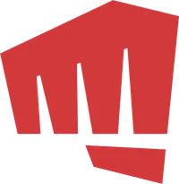
PRÉSENTATION ET COMMENTAIRE
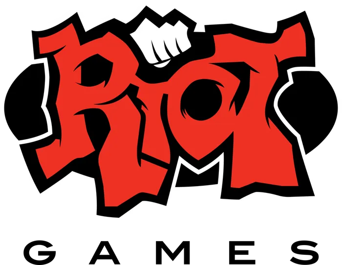
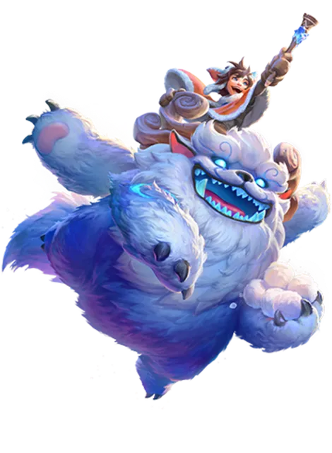
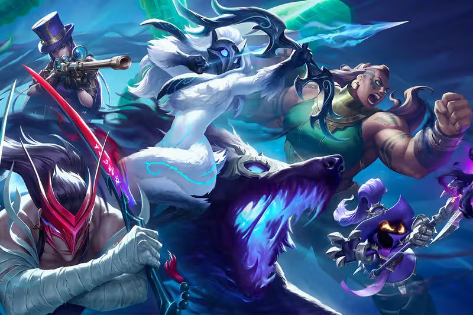
Présentation de Riot Games
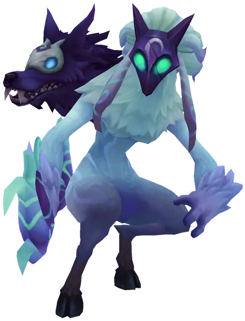
Chiffre d’affaires de l’entreprise en 2024
Nombre d’employés de Riot en 2024
Joueurs uniques par mois en 2024
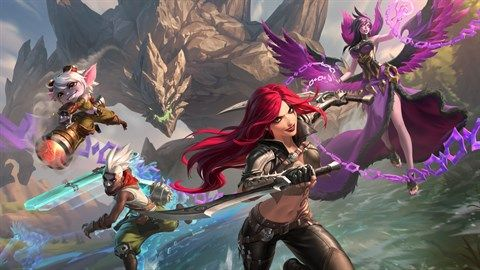
Jeu vidéo · 130 M joueurs mensuels
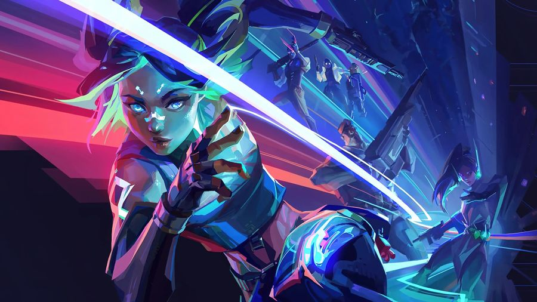
Jeu vidéo · 40 M joueurs mensuels
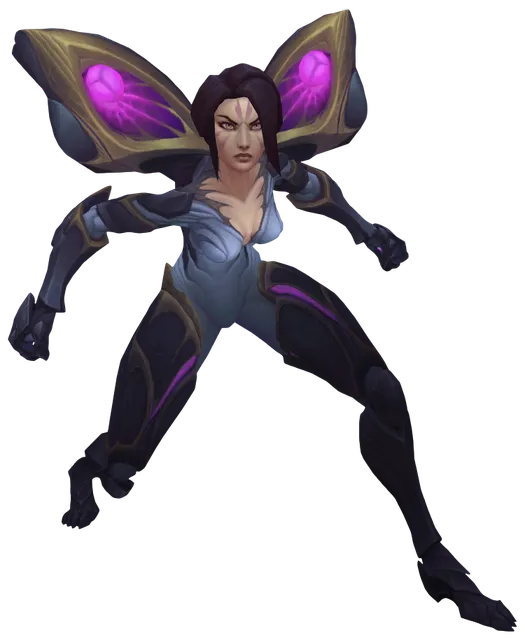
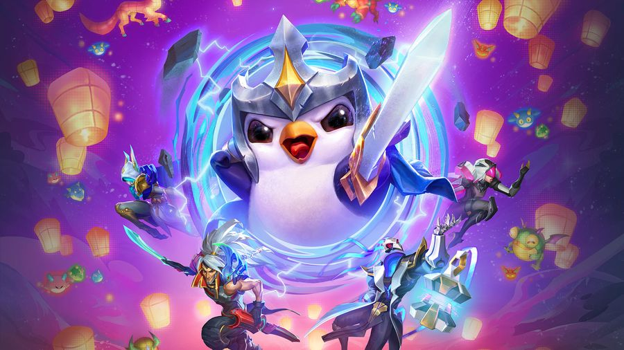
Jeu vidéo · 30 M joueurs mensuels
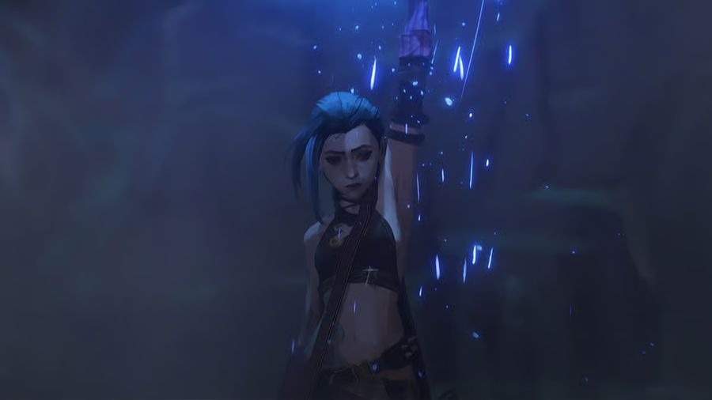
Série TV · 250 M heures vues
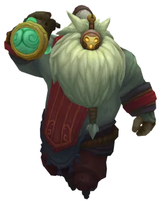
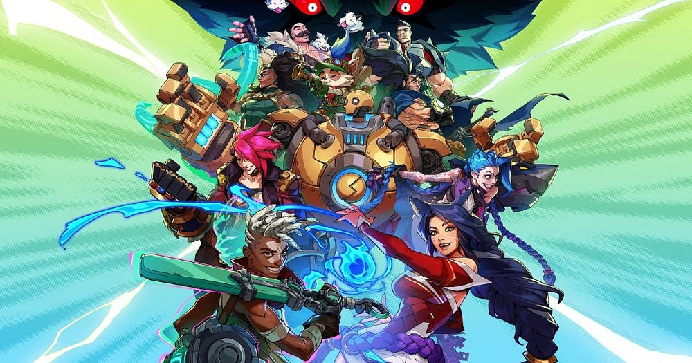
Présentation du rapport DD de Riot en 2024
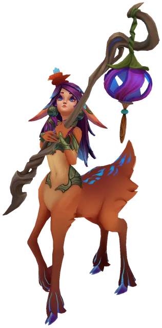
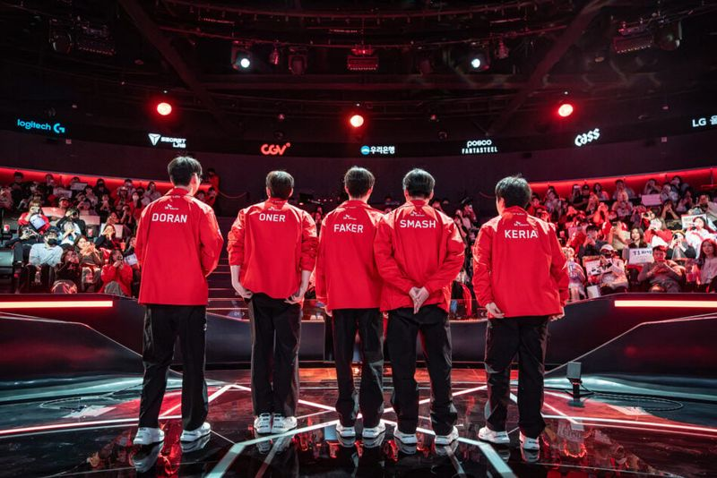
Les individus qui consomment du contenu de Riot
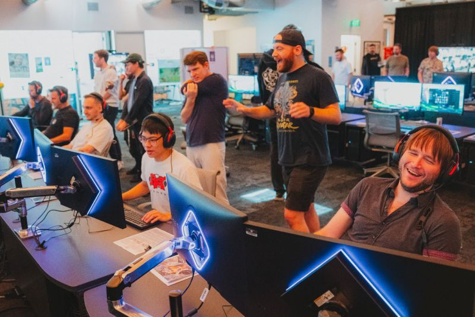
Les employés de Riot
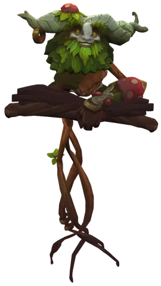
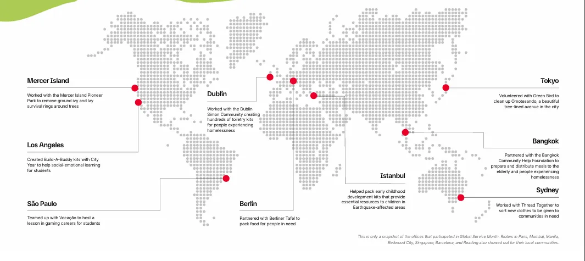
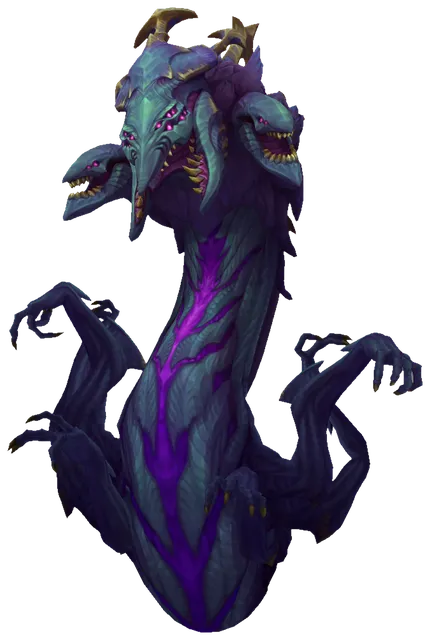
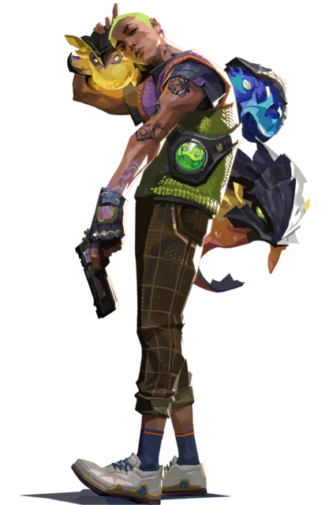
1 000 000 $ levés via les Worlds 2023 pour la reforestation
Bureau éco-conçu : climatisation et chauffage haute efficacité
de déchets évités, soit 563 tCO₂ économisées
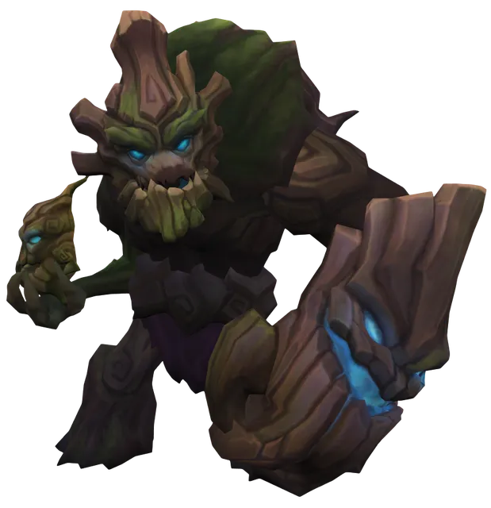
Social Impact Fund (cumulé 2019–2024)
Élèves impactés (DonorsChoose)
Boursières (Reboot Representation)
Give Back Bundle (VALORANT 2024)
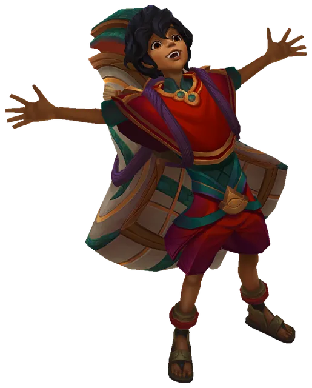
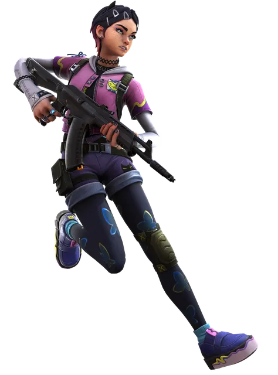
Agent VALORANT représentant les personnes transidentitaires
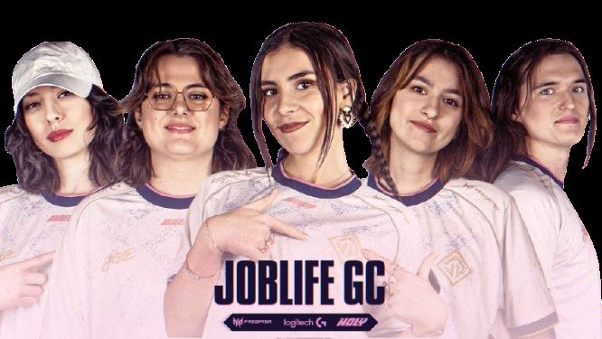
Compétition féminine de VALORANT : 466 k spectateurs en ligne
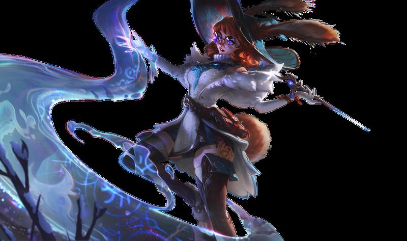
Championne de League of Legends présentant un spectre autistique
20 séances de thérapie gratuites
Accompagnement culturellement adapté
Kinésithérapie et prévention
Donation matching : 701 associations
Femmes Rioters (global)
Femmes en direction (Dir.+)
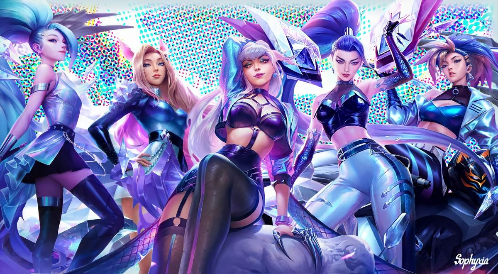
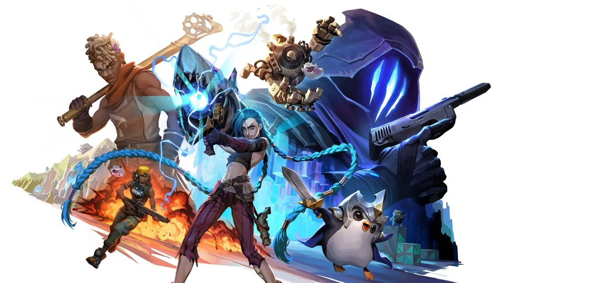
Critique scientifique du rapport de Riot
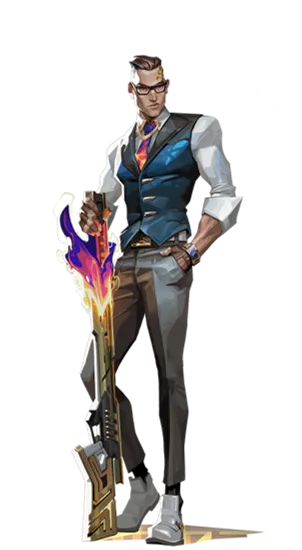
Des mesures concrètes mises en œuvre
Appel à des entreprises tierces
Pilier économique beaucoup trop absent
Ne mentionne pas certains événements négatifs
Diversité et égalité au centre de Riot
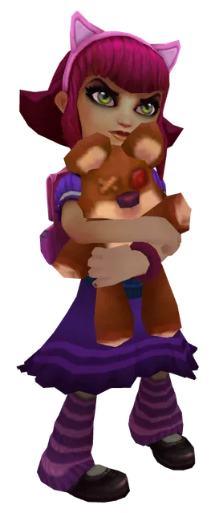
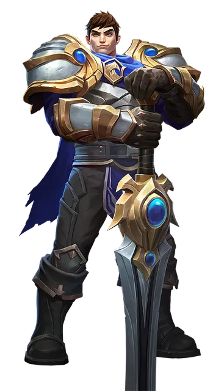
Avez-vous des questions ?
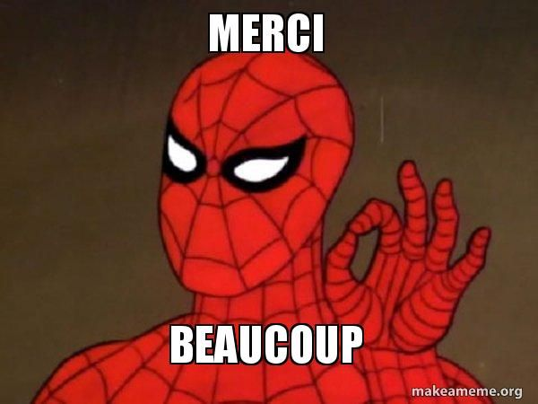
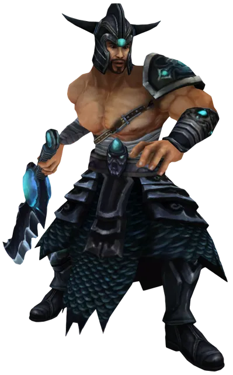
RAPPORT DD 2024
Flèches : naviguer · S : sélecteur · F : plein écran · Échap : fermer
Riot Games, rapport d’impact 2024.
Reprise de la présentation PowerPoint originale, fautes de frappe corrigées. La slide d’ouverture « Conclusions » sans contenu et les slides du modèle Slidesgo restées à la fin de l’original ont été retirées.
Visuels, logos et champions de Riot Games et mème repris de la présentation originale. Thème inspiré du modèle Slidesgo de l’original. Zen Dots (Yoshimichi Ohira) et Cambay (Pooja Saxena), licence SIL Open Font License 1.1, fichiers dans assets/fonts/.
assets/fonts/